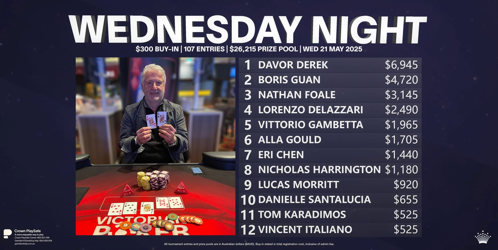
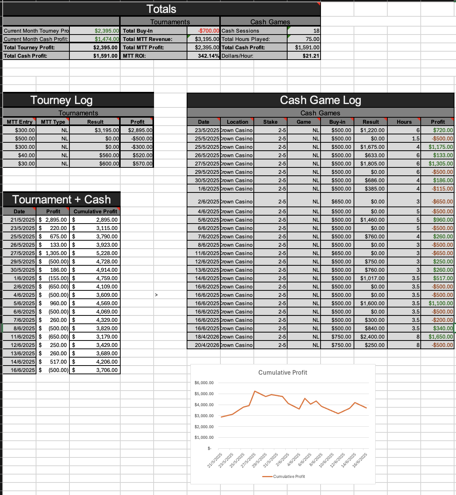

Realistic 4-Max
BU, SB, BB and UTG positions with correct action order and blind logic.
Personal study / Strategy lab
A record of results from the felt, the tools I use to study the game, and an interactive space for thinking through decisions under uncertainty.
Current spot BU facing a 3× UTG open
01 Real results
02 Session tracking
03 Interactive trainer
04 Future poker tools
Results / From the felt
I record outcomes to separate memorable hands from actual performance—and to make the swings visible rather than intuitive.

Best recorded tournament result
A deep run in the Crown Wednesday Night no-limit event, finishing third from 107 entries.
Tracker snapshot
Tournament profit$2,395
Cash-game profit$1,591
MTT ROI342.14%
Cash hours75
Cash sessions18
Dollars / hour$21.21

Interactive demo / Browser trainer
A browser interpretation of the Python CLI trainer I built to practise positional awareness, pot odds, range equity and realistic sizing.
poker_trainer.py — interactive session
AWAITING ACTION--- Starting Hand #8 ---
Pot: 150 | Board: --
Your Hand: Q♣ J♣
Equity vs Range: 15.5% Win / 0.8% Tie / 83.7% Lose
Action on Hero (BU) · Stack: 2000 · To Call: 60
Your options:
Choose an action to receive strategic feedback.
BU, SB, BB and UTG positions with correct action order and blind logic.
Monte Carlo equity against estimated ranges rather than random cards.
Tight, loose and maniac tendencies change ranges and fold equity.
Minimum, half-pot, three-quarter-pot, pot and all-in options.
VPIP, PFR, aggression factor and net results across the session.
Inspired directly by the 1,400-line Python and Treys trainer.
Poker Lab / Next builds
The trainer is the first playable piece. These modules could turn Poker Corner into a deeper strategy laboratory.
A complete browser table with stochastic opponents, rotating positions, independent stacks and post-flop play.
Paste a hand history and reconstruct the decision tree street by street.
Compare equity, pot odds and fold equity as ranges and bet sizes change.
Turn the spreadsheet workflow into a clean session log with filters and charts.
Poker as a decision problem
The attraction is not certainty—it is making the best decision possible with limited information, then learning from the result without confusing the two.
Return to portfolio